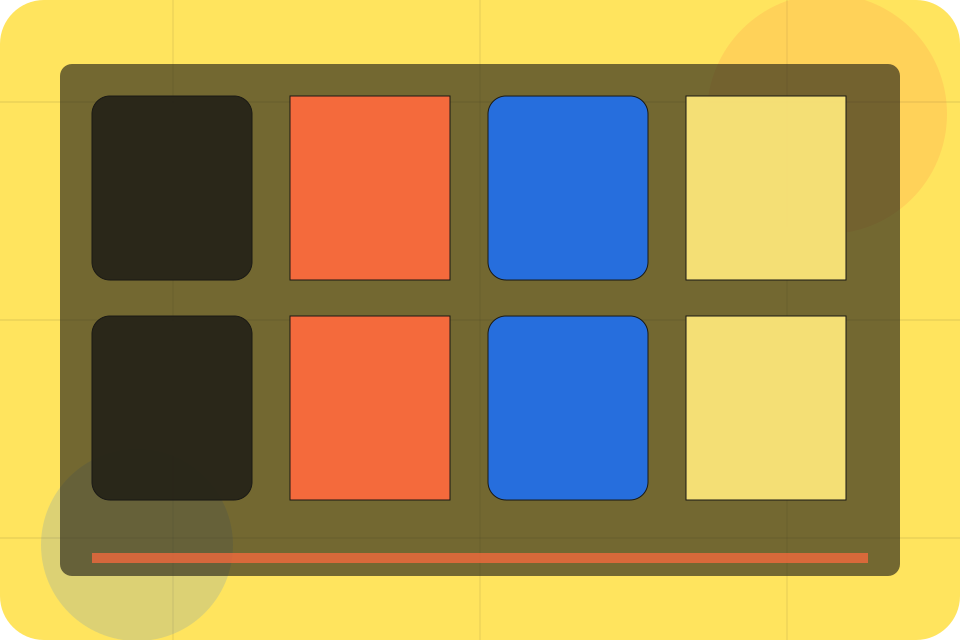
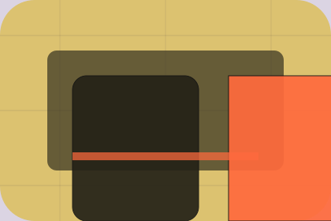

Talent / 01
Talent by Talent
Talent shaped for recruitment, hr & workplace services decisions.
Talent opens as a clear recruitment decision hub: what Talent offers, who it helps, why it matters, and which route to take first.
The first screen combines positioning, proof, primary action, and fast internal navigation, so people can act immediately or compare the rest of the talent route with context.
Recruitment scopeCompare optionsRequest advice
Yellow job magazine hero
Choose the audience
Select the closest route and Talent keeps the next step, proof, and follow-up expectation aligned with matching confidence for two audiences.

Talent / 02
Goal
Goal adds professional context to the talent route, using the editorial talent marketplace structure to support matching confidence for two audiences before visitors choose a next step.
Talent uses job story cards and focused copy to make the decision easier to scan, aligning the section with matching confidence for two audiences rather than filling space.
Explore TalentContext
Goal gives the page a specific angle instead of repeating the navigation label.
Judgment
The job story cards show what to compare, what to avoid, and what matters most for recruitment, hr & workplace services visitors.
Direction
The final cue points to a useful internal route so the section keeps the journey moving.
Talent / 03
Opportunities
Opportunities adds professional context to the talent route, using the editorial talent marketplace structure to support matching confidence for two audiences before visitors choose a next step.
Talent uses job story cards and focused copy to make the decision easier to scan, aligning the section with matching confidence for two audiences rather than filling space.
Explore TalentContext
Opportunities gives the page a specific angle instead of repeating the navigation label.
Judgment
The job story cards show what to compare, what to avoid, and what matters most for recruitment, hr & workplace services visitors.
Direction
The final cue points to a useful internal route so the section keeps the journey moving.
Talent / 04
CV
CV adds professional context to the talent route, using the editorial talent marketplace structure to support matching confidence for two audiences before visitors choose a next step.
Talent uses job story cards and focused copy to make the decision easier to scan, aligning the section with matching confidence for two audiences rather than filling space.
Explore TalentContext
CV gives the page a specific angle instead of repeating the navigation label.
Talent / 05
Interviews
Interviews adds professional context to the talent route, using the editorial talent marketplace structure to support matching confidence for two audiences before visitors choose a next step.
Talent uses job story cards and focused copy to make the decision easier to scan, aligning the section with matching confidence for two audiences rather than filling space.
Explore TalentContext
Interviews gives the page a specific angle instead of repeating the navigation label.
Judgment
The job story cards show what to compare, what to avoid, and what matters most for recruitment, hr & workplace services visitors.
Direction
The final cue points to a useful internal route so the section keeps the journey moving.
Talent / 06
Matching
Matching adds professional context to the talent route, using the editorial talent marketplace structure to support matching confidence for two audiences before visitors choose a next step.
Talent uses job story cards and focused copy to make the decision easier to scan, aligning the section with matching confidence for two audiences rather than filling space.
Explore TalentContext
Matching gives the page a specific angle instead of repeating the navigation label.
Judgment
The job story cards show what to compare, what to avoid, and what matters most for recruitment, hr & workplace services visitors.
Direction
The final cue points to a useful internal route so the section keeps the journey moving.
Talent / 07
Advice
Advice adds professional context to the talent route, using the editorial talent marketplace structure to support matching confidence for two audiences before visitors choose a next step.
Talent uses job story cards and focused copy to make the decision easier to scan, aligning the section with matching confidence for two audiences rather than filling space.
Explore TalentContext
Advice gives the page a specific angle instead of repeating the navigation label.
Judgment
The job story cards show what to compare, what to avoid, and what matters most for recruitment, hr & workplace services visitors.
Direction
The final cue points to a useful internal route so the section keeps the journey moving.
Talent / 08
Process
Process explains the operating sequence so visitors can see how the first request becomes a clear recommendation and follow-up.
The steps are written from the visitor side: what they do first, what Talent clarifies, what they receive, and how support continues.
Explore Talent- 01
Start
How visitors begin this route and what detail is useful at the first step.
- 02
Clarify
What Talent reviews, filters, or explains before recommending the next move.
- 03
Continue
What the visitor receives afterward, including support, proof, or a handoff to the next page.
Talent / 09
Apply
Talent closes the talent route with a clear action, a quick reminder of the value, and a low-friction way to start hiring.
Visitors who are ready can use the primary action. Visitors who are still comparing can scan the section links, proof, and support routes before they start hiring.
Start HiringReady
Use the primary CTA when the fit is clear and timing matters.
Compare
Review linked proof, questions, and support routes if more context is needed.
Response
Talent keeps the next reply focused on scope, timing, and the right first step.
Talent / 10
Start Hiring
Talent closes the talent route with a clear action, a quick reminder of the value, and a low-friction way to start hiring.
Visitors who are ready can use the primary action. Visitors who are still comparing can scan the section links, proof, and support routes before they start hiring.
Start HiringThe final block keeps the choice simple: act now, compare one more proof route, or send enough detail for a focused response.
Start Hiringmatching confidence for two audiences
Start Hiring
A recruitment magazine site with candidate/employer split, bold editorial cards, people proof, and upload routes. Talent ends with a direct path to start hiring, plus enough context for visitors who still need to compare.

Start HiringNotes
Information is provided for planning and should be reviewed for the final client, location, and operating rules.